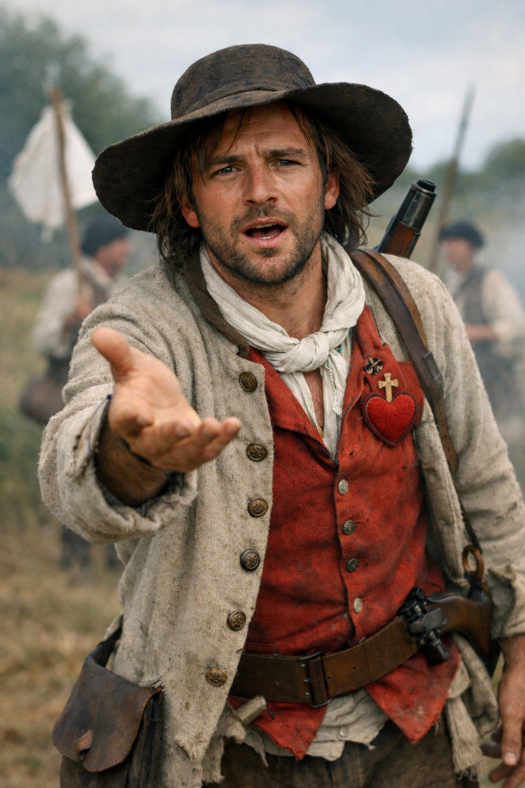
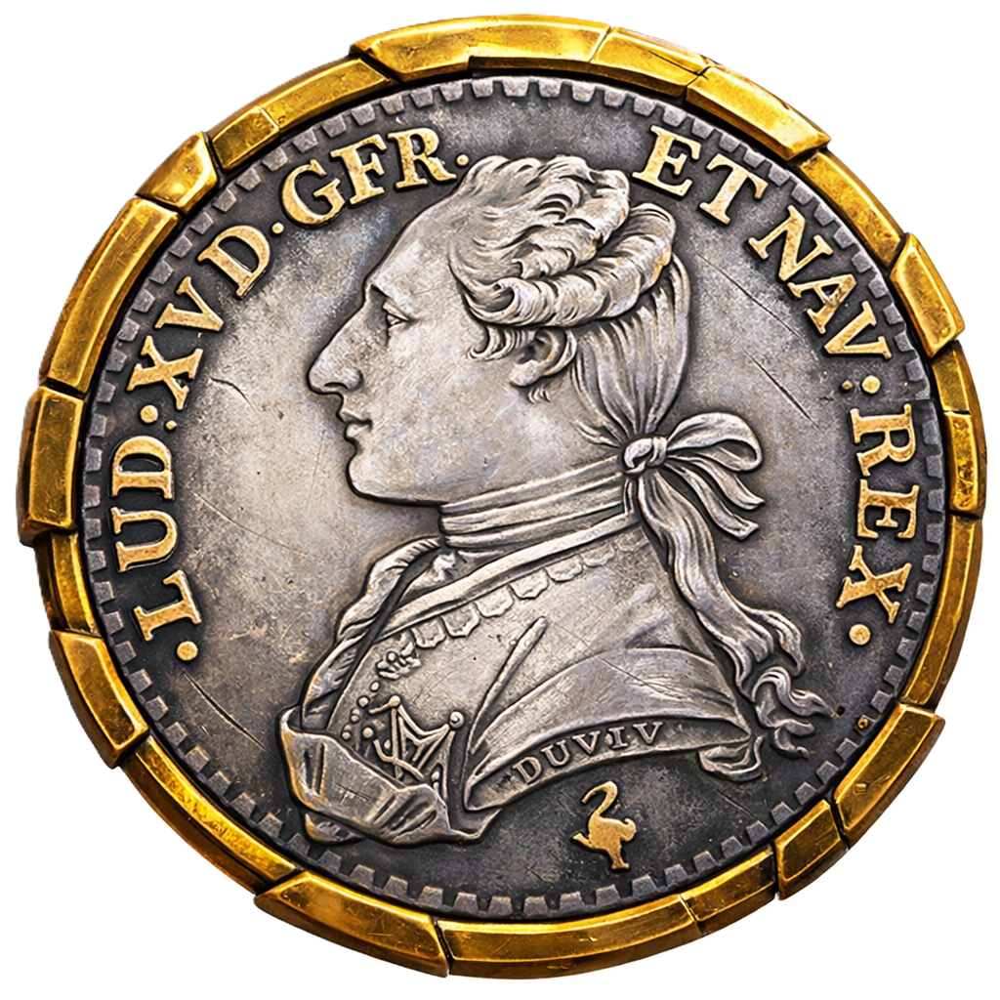
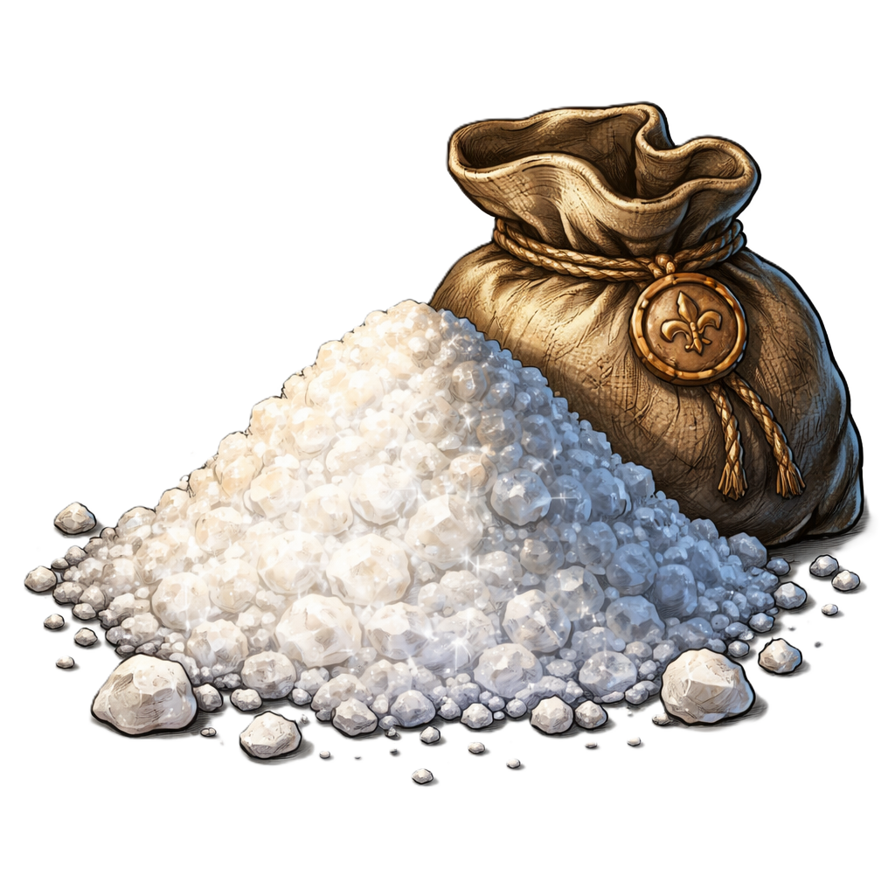
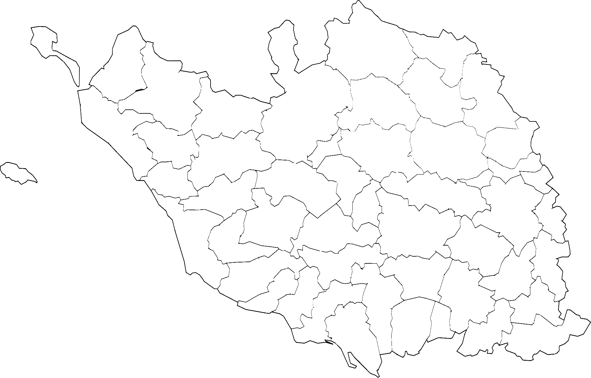

Attention : les images sont des illustrations et ne représentent pas exactement la Vendée militaire telle qu’elle était.
La Vendée est insurgée, aidez les Vendéens à récupérer les villes vendéennes en répondant à des questions sur l’Histoire et la géographie de la Vendée.

Eh vous ! Il faut sauver nos paroisses ! Quel est votre prénom ?
Répondez à l'insurgé vendéen qui vous demande votre prénom. Il sera affiché sur votre profil et ne pourra pas être changé.
5/5
Prochaine vie dans --:--

0

0

Vous habitez à l'île d'Yeu. Pour récupérer votre île des bleus, vous devez répondre à dix questions. Vous pouvez déplacer la carte pour vous y rendre. Vous devez reprendre toutes les paroisses vendéennes en répondant à des questions. Prouvez, que vous êtes un vrai vendéen.